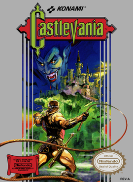

1-Castlevania
Castlevania è il primo videogioco della serie omonima prodotta da Konami, pubblicato nel 1986. In questo episodio (ambientato nel 1691) fa la sua comparsa il corpus originale della saga, che vede Simon Belmont, esperto cacciatore di vampiri, armato della leggendaria frusta ammazza-vampiri Vampire Killer in possesso del clan Belmont da generazioni, fronteggiare le forze del Conte Dracula emerse dalle ombre.

2-Metal Gear
Metal Gear è il primo videogioco della serie omonima, creata da Hideo Kojima. È uscito nel 1987, all'inizio solo per MSX2, e poi in seguito convertito per Nintendo Entertainment System, MS-DOS e Commodore 64.
Outer Heaven, Sudafrica. Inizia l'Operazione Intrusione N313: Snake, agente dell'unità FOXHOUND supportato via radio dal suo comandante Big Boss, deve infiltrarsi in Outer Heaven e distruggere "l'arma finale", il Metal Gear: si tratta di un carro armato bipede dotato di armi nucleari e in grado di muoversi su ogni genere di terreno.
3-Super Mario Bros.
Super Mario Bros. è un videogioco a piattaforme sviluppato e pubblicato nel 1985 da Nintendo per il Nintendo Entertainment System. Ideato da Shigeru Miyamoto, è il primo titolo della serie di Mario.
Il giocatore controlla i movimenti e le azioni di Mario, l'obiettivo del gioco è di attraversare i tanti mondi del Regno dei Funghi divisi in livelli, eliminare e/o evitare il malvagio Bowser e le sue truppe, e salvare la Principessa Peach. Il principale metodo per eliminare i nemici è saltarci sopra.